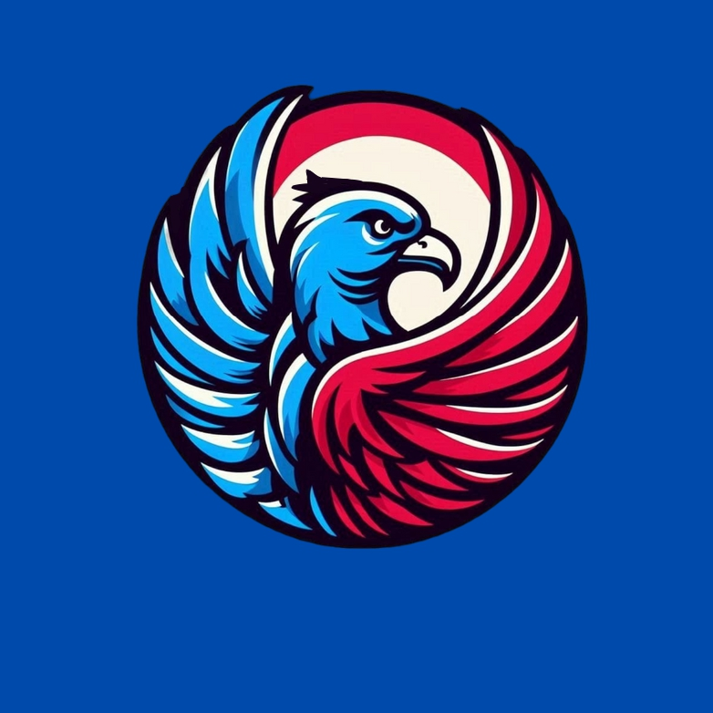

PARTAI GARUDA

Gagasan Baru, untuk Thomas yang Lebih Maju !
VISI
Membangun dan meningkatkan potensi yang sesuai dengan bakat dan minat seluruh
siswa/siswi SMA Strada Santo Thomas Aquino melalui karya yang kreatif dan inovatif,
serta menumbuhkan generasi muda yang berintegritas dan bertanggung jawab dengan
landasan Profil Pelajar Pancasila.
MISI
1. Merancang dan merealisasikan program kerja yang "AtTraCtive" (Active, Transparent, Communicative) melalui aspirasi siswa/siswi SMA Strada
Santo Thomas Aquino.
2. Meningkatkan dan mendukung partisipasi siswa/siswi untuk mengembangkan bakat serta minat,
baik secara akademis maupun non-akademis melalui berbagai kegiatan sekolah.
3. Mendorong interaksi siswa/siswi secara responsif untuk meningkatkan jiwa sosial dan komunikatif yang berintegritas untuk mengembangkan
potensi di era digital.
Program Kerja
1. THOMAS GOT TALENT
2. THOMTEL (THOMAS TELADAN)
3. MOSD ( MPK/OSIS DAY )